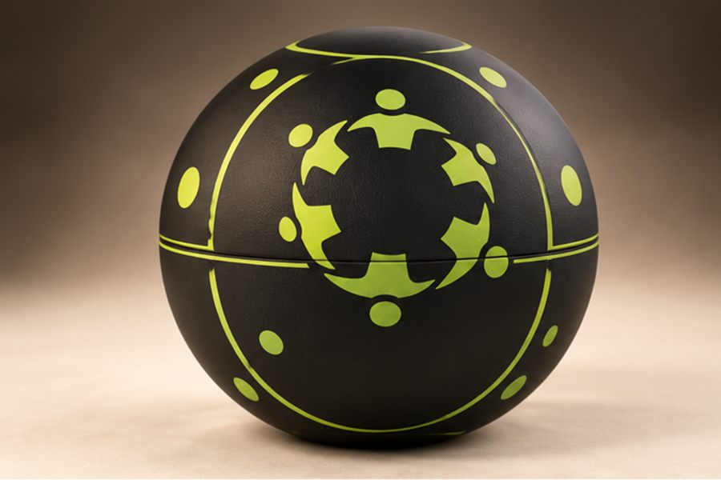
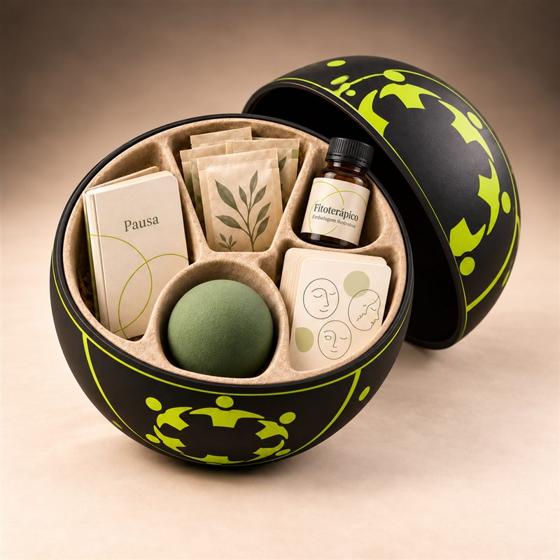
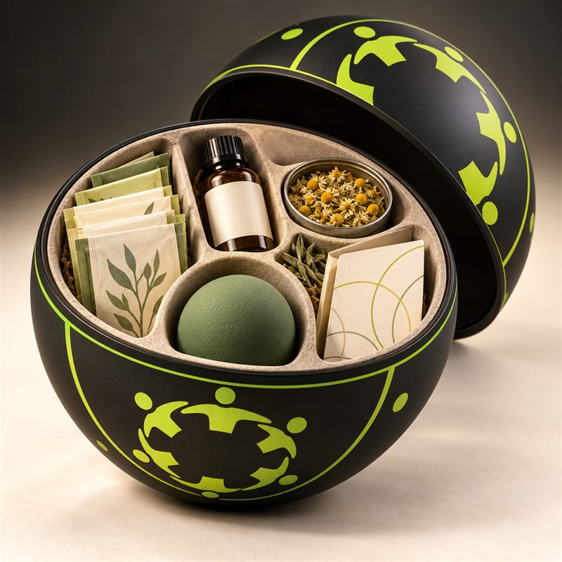
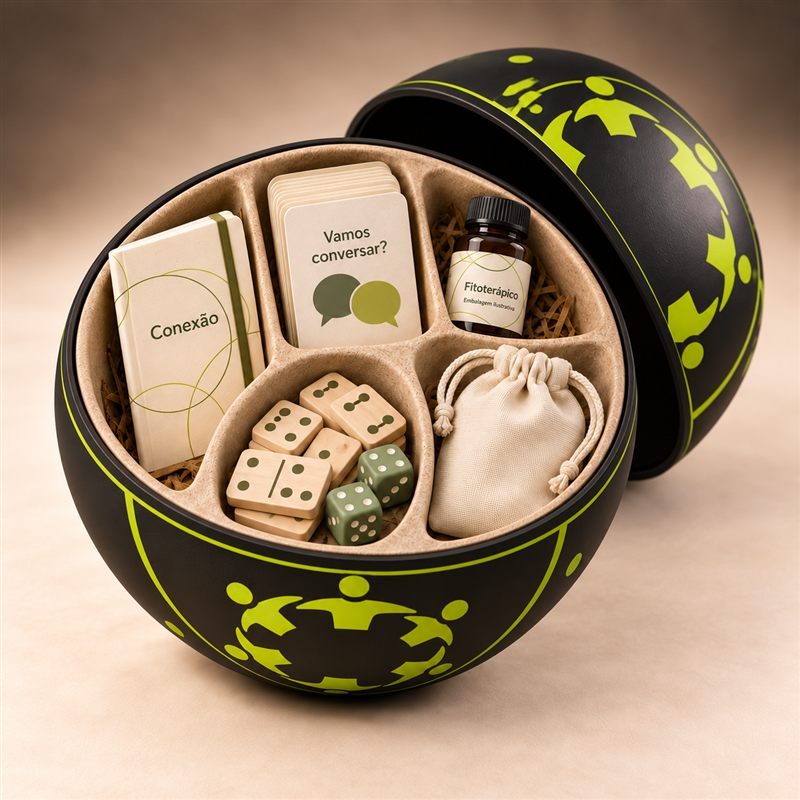
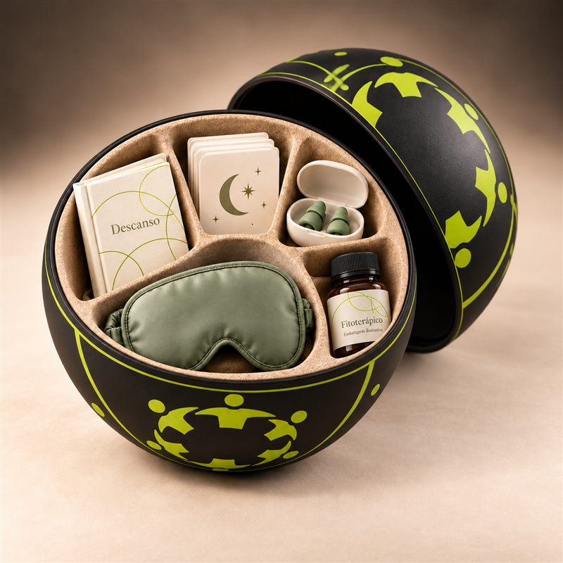

Pelada de quarta: futebol society
Quadra parceira, time montado na hora. Quem curte esporte vê essa sala primeiro.
A Roda junta seis desconhecidos que se veem quatro vezes no mesmo lugar e horário. Entre um encontro e outro, você entra em salas de até seis pessoas para jogar bola, ir ao cinema ou sair para beber.
Esse é o app de verdade. Pode tocar.
1 em 6
pessoas no mundo são afetadas pela solidão. Entre adultos de 18 a 29 anos, o índice chega a 17,4%.
Fonte: Organização Mundial da Saúde, Comissão sobre Conexão Social, relatório de junho de 2025.
“Me mudei pra cidade grande por trabalho. Conheço gente o tempo todo, mas não tenho com quem sair num sábado.”
Apps de encontro e eventos únicos geram conhecidos, não amigos. Você janta com estranhos uma vez e nunca mais os vê. Falta continuidade.
Cinco minutos sobre seus interesses, bairro, horários livres e energia social.
Juntamos seis pessoas com afinidade e a mesma agenda, misturando profissões para fugir da bolha.
Mesmo dia, mesmo horário, mesmo café, bar ou parque parceiro. Cerca de 2h30 cada.
Cartas com dinâmicas leves: histórias, uma atividade juntos, algo que você ama e um rolê planejado pelo grupo.
Cada pessoa marca em segredo com quem quer manter contato. Interesses mútuos são revelados.
Além da sua roda fixa, o app sugere encontros com base no que você curte. Você reserva seu lugar no espaço e sai com aquele povo.
Quadra parceira, time montado na hora. Quem curte esporte vê essa sala primeiro.
O consumo nos encontros é pago à parte, direto ao local.
R$ 79 por ciclo
Quatro encontros com as mesmas seis pessoas e acesso às salas.
R$ 59,90 por mês
Apoio profissional para quem quer se conectar melhor. Funciona junto com as rodas e salas.
Não é atendimento de emergência. Em um momento de crise, ligue 188 (CVV), gratuito e 24 horas.
Receba seis clientes fixos em horários de pouco movimento, como terça às 19h, e pague comissão só sobre o consumo.
Benefício de saúde mental para a equipe, alinhado à NR-1, com parte do valor indo para ONGs. Saiba mais
Incluído na Roda Cuidado
Na triagem, você e o psicólogo da ONG que te acompanha escolhem o kit que combina com o seu momento. Ele chega numa esfera com a marca da roda e traz o que ajuda a atravessar o mês e a chegar inteiro ao próximo encontro.


Para fases de ansiedade
Caderno de escrita guiada, chás de ervas, bolinha para apertar e cartas de respiração.

Para mente acelerada e TDAH
Bolinha sensorial para mãos inquietas, cartões de rotina, chás e camomila para desacelerar.

Para fases de desânimo e isolamento
Cartas "Vamos conversar?", dominó e dados para levar ao encontro, caderno e uma surpresa no saquinho.

Para noites difíceis
Máscara de dormir, protetores auriculares, cartas para a hora de deitar e caderno de descanso.
Os kits apoiam o acompanhamento e não substituem tratamento. Fitoterápicos só entram com indicação do profissional que te acompanha. Imagens ilustrativas.
Para empresas e convênios
Com a atualização da NR-1, as empresas precisam identificar e cuidar dos riscos psicossociais do trabalho, como esgotamento e isolamento. A Roda entra como benefício: convívio de verdade, apoio psicológico e um kit em casa todo mês.
Um benefício que entra nas ações do seu programa de gerenciamento de riscos, com atenção especial a quem trabalha remoto ou mudou de cidade.
Levar a Roda para minha empresaOfereça a Roda aos seus beneficiários como programa de prevenção. Cuidar antes custa menos que tratar depois.
Falar sobre parceriaA Roda complementa, mas não substitui, a avaliação de riscos psicossociais que cabe à própria empresa.
Os psicólogos da Roda Cuidado vêm de ONGs parceiras. O app leva assinantes e visibilidade até elas, e quem financia a rede são empresas, convênios, marcas e apoiadores.
Ofereça atendimento aos assinantes da Roda e ganhe visibilidade e apoio financeiro para o seu trabalho.
Cadastrar minha ONGColoque produtos no kit mensal ou apoie as ONGs como investimento social. Sua marca aparece sempre identificada como apoiadora.
Quero apoiarAssine a Roda Cuidado e doe outra assinatura para alguém indicado por uma ONG parceira.
Assinar e doarResponda, conheça as cinco pessoas que vão sentar com você e marque o primeiro encontro.
Entrar numa roda